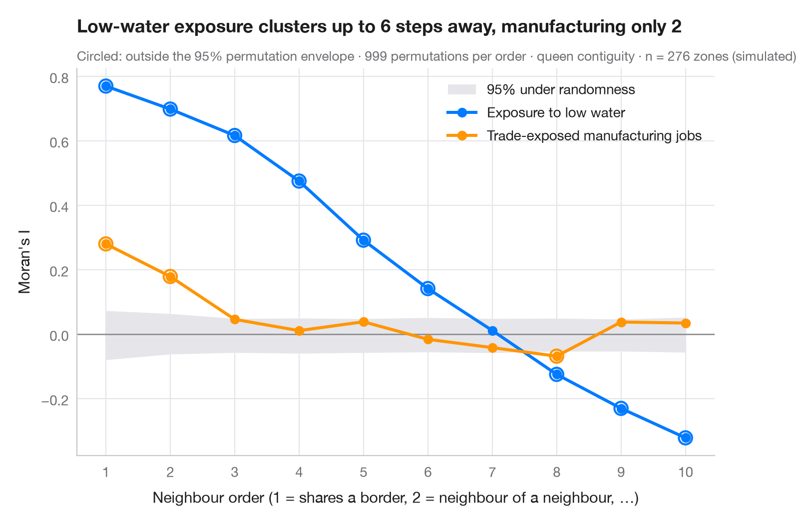

Corrélogramme spatial
Le I de Moran à des ordres de voisinage croissants, avec une enveloppe de permutation — jusqu'où porte le regroupement spatial.

Le I de Moran calculé avec les voisins d'ordre 1 mesure le regroupement à la plus courte portée. Un corrélogramme spatial répète le calcul pour les voisins d'ordre 2 (voisins de voisins, sans les plus proches), 3, et ainsi de suite. La courbe montre l'échelle spatiale d'un phénomène : à combien d'étapes deux zones peuvent-elles encore se ressembler, et les zones éloignées deviennent-elles opposées — I négatif — comme lorsqu'une région se partage en deux grands blocs ? C'est l'équivalent spatial de la fonction d'autocorrélation d'une série chronologique.
La bande grise est l'intervalle à 95 % de I sous l'hypothèse d'aléa spatial, tiré de 999 permutations à chaque ordre ; les points hors de la bande sont peu probables en l'absence de structure spatiale. Deux variables sont comparées : l'exposition aux bas niveaux d'eau, qui suit de longs tronçons de la voie navigable, et la part des emplois manufacturiers exposés au commerce, très regroupée autour de quelques villes industrielles.
Les données sont simulées, dans le contexte du GVCdtLab, le jumeau numérique du CIRANO consacré au corridor de commerce et de transport Grands Lacs–Saint-Laurent : 276 zones hexagonales le long d'une voie navigable schématique allant de Duluth et Chicago au golfe du Saint-Laurent, chacune dotée d'un indice de 0 à 100 mesurant l'exposition de sa navigation aux bas niveaux d'eau. Ni les zones ni les valeurs ne sont des données ou des résultats du laboratoire. Les pondérations sont des contiguïtés de type reine d'ordre supérieur, tirées de libpysal.weights.higher_order et standardisées par ligne ; I vient de esda.Moran.
Le code et le texte à l'intérieur des figures sont en anglais.
import geopandas as gpd
import matplotlib.pyplot as plt
import numpy as np
from esda.moran import Moran
from libpysal import weights
from shapely.geometry import MultiLineString, Point, Polygon
# Simulated data, set in the context of the CIRANO GVCdtLab [gvcdtlab]
# Schematic corridor: hexagonal zones within reach of the waterway, Duluth and Chicago to the Gulf
main = [(-92.1, 46.8), (-89.2, 48.4), (-84.4, 46.5), (-82.4, 44.0), (-83.0, 42.3), (-81.2, 42.2),
(-79.0, 42.9), (-79.4, 43.6), (-76.5, 44.2), (-73.6, 45.5), (-71.2, 46.8), (-68.5, 48.5),
(-64.5, 49.2)]
michigan = [(-84.0, 45.6), (-86.6, 45.4), (-87.0, 43.5), (-87.6, 41.9)]
k = np.cos(np.radians(45)) # shrink longitudes so the hexagons are regular
water = MultiLineString([[(x * k, y) for x, y in line] for line in (main, michigan)])
r, hexes = 0.3, []
for col in range(90):
for row in range(36):
cx, cy = -66.5 + 1.5 * r * col, 40.5 + np.sqrt(3) * r * (row + (col % 2) / 2)
if water.distance(Point(cx, cy)) < 0.95:
hexes.append(Polygon([(round(cx + r * np.cos(a), 6), round(cy + r * np.sin(a), 6))
for a in np.radians(range(0, 360, 60))]))
g = gpd.GeoDataFrame(geometry=hexes)
xy = np.column_stack([g.centroid.x / k, g.centroid.y]) # back to longitude, latitude
# Exposure to low water: high at shallow passages (Seaway, connecting channels, upper lakes),
# low in the deep tidal estuary, plus spatially smooth noise and one draft-limited harbour
def bump(lon, lat, s):
return np.exp(-((xy[:, 0] - lon) ** 2 + (xy[:, 1] - lat) ** 2) / (2 * s ** 2))
w = weights.Queen.from_dataframe(g, use_index=False)
w.transform = "r"
rng = np.random.default_rng(12)
noise = rng.normal(0, 1, len(g))
for _ in range(2):
noise = weights.lag_spatial(w, noise) # smooth the noise over neighbours
exposure = (35 + 30 * bump(-74.8, 45.0, 1.6) + 22 * bump(-82.7, 42.7, 1.2) + 20 * bump(-90.3, 47.6, 1.8)
- 25 * bump(-67.0, 48.8, 2.2) + 12 * noise + rng.normal(0, 4, len(g)))
exposure[np.argmin(np.hypot(xy[:, 0] + 66.0, xy[:, 1] - 49.0))] = 75 # outlier harbour
g["exposure"] = exposure.clip(0, 100).round(1)
# A second, short-range variable: trade-exposed manufacturing jobs around a few industrial cities
g["manuf"] = (18 + 12 * bump(-83.0, 42.3, 0.6) + 10 * bump(-79.8, 43.3, 0.6) + 9 * bump(-73.6, 45.5, 0.5)
+ 9 * bump(-87.6, 41.9, 0.5) + rng.normal(0, 2.5, len(g)))
variables = {"exposure": ("Exposure to low water", "#007AFF"),
"manuf": ("Trade-exposed manufacturing jobs", "#FF9500")}
w1 = weights.Queen.from_dataframe(g, use_index=False)
orders = range(1, 11)
res = {v: [] for v in variables}
np.random.seed(1) # esda draws its permutations from NumPy's global generator
for o in orders:
wk = weights.higher_order(w1, o, silence_warnings=True) # exactly o steps away
wk.transform = "r"
for v in variables:
m = Moran(g[v].to_numpy(), wk, permutations=999)
res[v].append((m.I, *np.percentile(m.sim, [2.5, 97.5]), m.p_sim))
fig, ax = plt.subplots(figsize=(8, 5))
env = np.array(res["exposure"])[:, 1:3] # envelope (similar for both variables)
ax.fill_between(orders, env[:, 0], env[:, 1], color="#E5E5EA", lw=0, label="95% under randomness")
ax.axhline(0, color="#8E8E93", lw=1)
for v, (name, c) in variables.items():
a = np.array(res[v])
ax.plot(orders, a[:, 0], color=c, lw=2.2, marker="o", label=name)
out = (a[:, 0] < a[:, 1]) | (a[:, 0] > a[:, 2])
ax.scatter(np.array(orders)[out], a[out, 0], s=90, facecolor="none", edgecolor=c, lw=1.5, zorder=4)
ax.set_xticks(list(orders))
ax.set_xlabel("Neighbour order (1 = shares a border, 2 = neighbour of a neighbour, …)")
ax.set_ylabel("Moran's I")
ax.grid(axis="x")
ax.legend(loc="upper right")
def reach_of(v): # length of the unbroken run of orders above the envelope
above = [I > hi for I, lo, hi, p in res[v]]
return above.index(False) if False in above else len(above)
reach = {v: reach_of(v) for v in variables}
ax.set_title(f"Low-water exposure clusters up to {reach['exposure']} steps away, "
f"manufacturing only {reach['manuf']}", pad=26)
ax.text(0, 1.02, "Circled: outside the 95% permutation envelope · 999 permutations per order · "
f"queen contiguity · n = {w1.n} zones (simulated)", transform=ax.transAxes, fontsize=9.5, color="#6E6E73")
plt.show()
Les figures utilisent le style PyStatlas (facultatif) : ajoutez plt.style.use("pystatlas.mplstyle") pour obtenir exactement le même rendu.
Source des données
- Simulated data. Simulated data with a fixed random seed, created for this example.
No real respondents, documents or measurements: the numbers only illustrate how the chart and its statistics work. - CIRANO GVCdtLab, digital twin of the Great Lakes–St. Lawrence corridor. CIRANO. GVCdtLab: Digital twin of the Great Lakes–St. Lawrence trade and transport corridor (researcher in charge: T. Warin). Supported by Transport Canada's National Trade Corridors Fund; research on hydrological change, maritime traffic and trade funded by the Fonds de recherche du Québec. https://cirano.qc.ca/en/research/pole/Transport
The examples are set in the context of the lab's work; the hexagonal zones form a schematic map of the corridor and the values are simulated — they are not the lab's data, geography or results.
Les exemples illustrent des méthodes statistiques. Leurs chiffres sont simulés, sauf mention contraire dans l'entrée, et leurs titres décrivent ce que chaque figure montre dans ces données simulées — ni les résultats des articles cités, ni la position de l'auteur sur la question de fond. Pour les résultats, le contexte et les données, reportez-vous aux articles cités ici.
Comment citer
PyStatlas est créé et maintenu par Thierry Warin. S'il vous a été utile dans vos travaux, merci de le citer.
Warin, T. (2026). Spatial correlogram. In PyStatlas: A Python Gallery of Statistical Graphics for the Social Sciences (Version 1.1.0) [Computer software]. https://warint.github.io/pystatlas/spatial-data/spatial-correlogram/
@misc{warin2026statlas,
author = {Warin, Thierry},
title = {PyStatlas: A Python Gallery of Statistical Graphics for the Social Sciences},
year = {2026},
version = {1.1.0},
howpublished = {\url{https://warint.github.io/pystatlas/}},
note = {Source code: https://github.com/warint/pystatlas}
}Plus dans Données spatiales

Carte choroplèthe avec pondérations spatiales
Une carte d'une variable avec, par-dessus, le réseau des voisins — la structure sur laquelle repose toute statistique spatiale.
spdep::poly2nb() + plot(nb, coords)
Diagramme de Moran (autocorrélation globale)
Chaque zone face à la moyenne de ses voisines, avec le I de Moran, son test par permutation et la distribution de référence.
spdep::moran.plot() + spdep::moran.mc()
Carte des regroupements LISA (autocorrélation locale)
Où se trouvent les regroupements et les valeurs atypiques spatiales — I de Moran local pour chaque zone, cartographié avec sa significativité par permutation.
spdep::localmoran_perm() / rgeoda::local_moran()